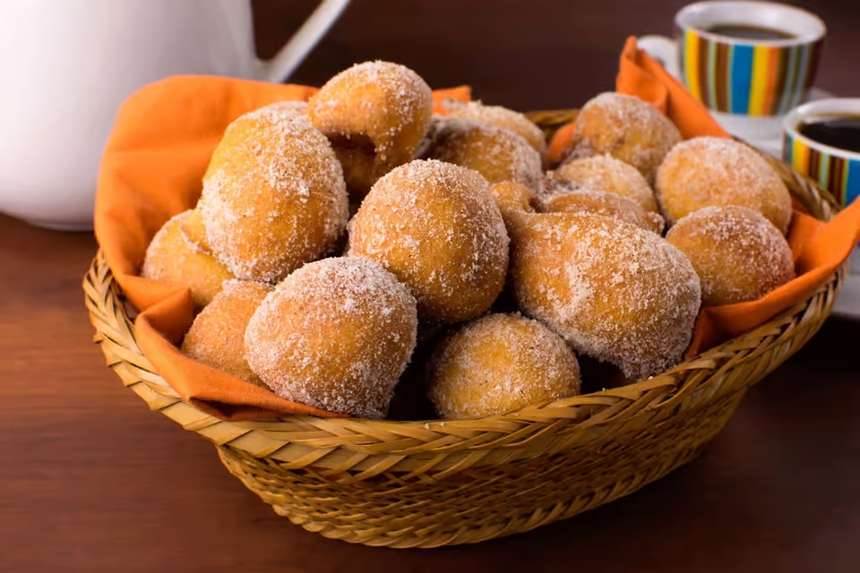

Bolinho de chuva

Description
Bolinho de chuva is a classic Brazilian dessert. It is mildly sweet,chewy and crispy outside, try it!
Ingredients
- 2 eggs
- 1 cup of milk(240ml)
- 1 tablespoon of yeast
- 1 tablespoon of cinnamon powder
- 1/2 cup of sugar(240ml)
- 2 and 1/2 cups of wheat flour
- oil
How to make
- Add two eggs and 1 cup of milk inside a bowl
- Mix it for about 1 minute and then add the wheat flour completely
- Mix until a dough is formed
- Add 1 tablespoon of yeast and mix it further until the dough is smooth and homogeneous
- Pour enough oil in a pan to fry the dough
- With a spoon take small parts of dough and put them in the oil
- Let them fry until they're browned, then put them aside on a plate
- Do this until you use up all the dough
- Prepare the coating mixing sugar and cinnamon powder
- Finally coat the dumplings and enjoy these delicious Bolinhos de chuva!